Váš druhý domov v historickém srdci Pardubic
Objevte kouzlo našeho rodinného hotelu. Čeká na vás 16 útulných pokojů, klidný dvůr a vůně čerstvě mleté kávy z naší kavárny.
Ověřit dostupnostVítejte u nás doma
Jsme rodinný hotel, kde si zakládáme na osobním přístupu a hřejivé atmosféře. Děláme maximum pro to, abyste se u nás cítili jako v bavlnce.
Ať už cestujete za obchodem, nebo s rodinou, u nás najdete ten správný prostor pro odpočinek. K dispozici máme 16 pečlivě zařízených pokojů – od praktického jednolůžka přes komfortní dvoulůžkové pokoje (ve druhém patře i s klimatizací) až po prostorné apartmány, kam se pohodlně vejdou až tři dospělí.
Více o hotelu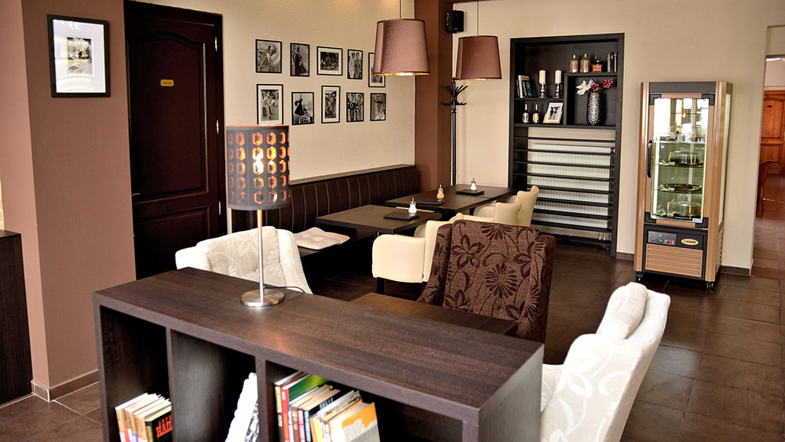
Bezpečí a pohodlí
Parkování ve dvoře
Své auto můžete bezpečně zaparkovat přímo v našem uzavřeném hotelovém dvoře. Místa nabízíme zdarma do naplnění kapacity (rezervace předem bohužel aktuálně není možná).
Komfort a absolutní klid
Kvalitní matrace zaručí dokonalý spánek po náročném dni. Pro horké letní měsíce navíc nabízíme i pokoje vybavené klimatizací.
Vše na dosah ruky
Nacházíme se jen pár kroků od Pernštýnského náměstí, historických památek i těch nejlepších restaurací ve městě.
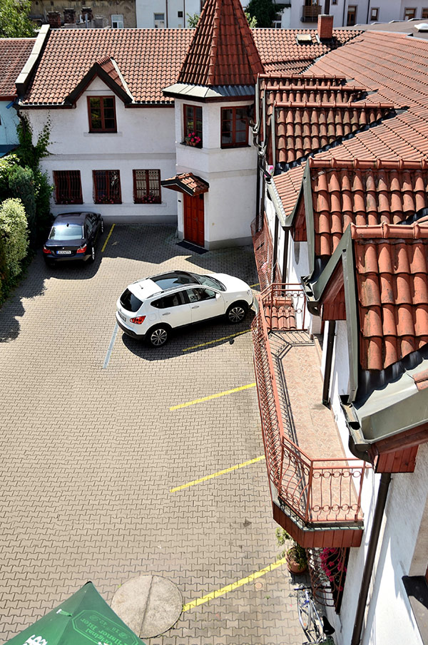

Kavárna Atrium: Srdce našeho hotelu
Ráno dělá den. U nás ho začnete bohatou kontinentální snídaní s vůní čerstvě mleté kávy. Naše kavárna je vám ale otevřena i odpoledne – je to ideální místo, kde můžete s šálkem výběrové kávy vyřídit e-maily, nebo si jen tak v klidu číst.
- Bohaté snídaně v ceně pobytu
- Výběrová, čerstvě mletá káva
- Klidná oáza uprostřed města
-
Otevřeno:Po – Pá: 8:00 – 20:00 So: 8:30 – 20:00 Ne: 14:00 – 20:00
To nejlepší z Pardubic a okolí
Pardubice nejsou jen perník. Objevte skvělou gastronomii a historické skvosty jen pár minut chůze od hotelu.
Kam na večeři
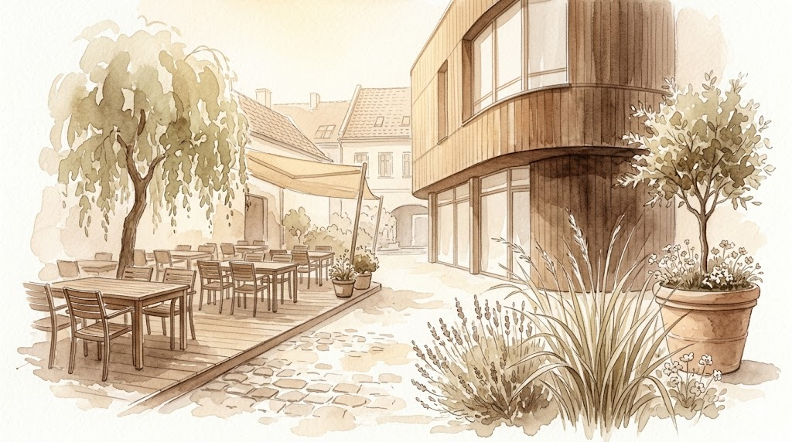
Nejen Dvorek
Moderní bistro s úžasnou atmosférou a zahrádkou ve vnitrobloku. Zaměřují se na sezónní suroviny a netradiční kombinace chutí.
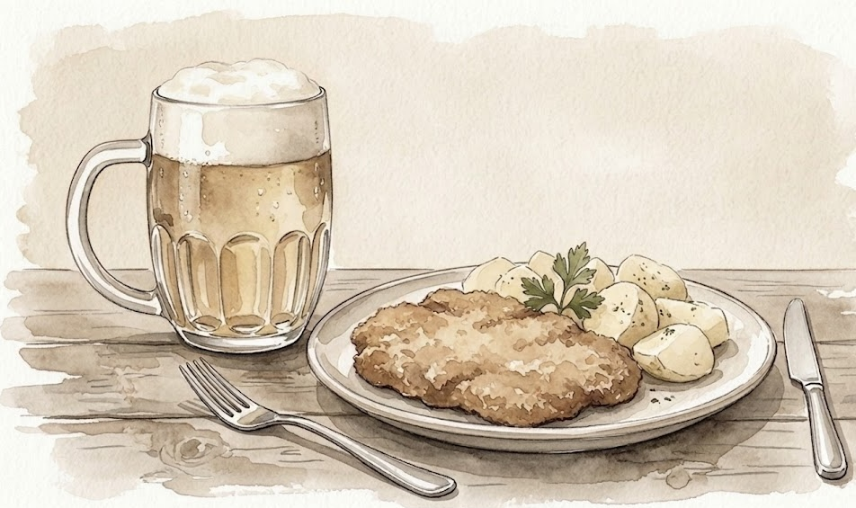
Plzeňka
Poctivá česká klasika a tanková Plzeň. Pokud máte chuť na výbornou svíčkovou, guláš nebo konfitovanou kachnu, tady nešlápnete vedle.
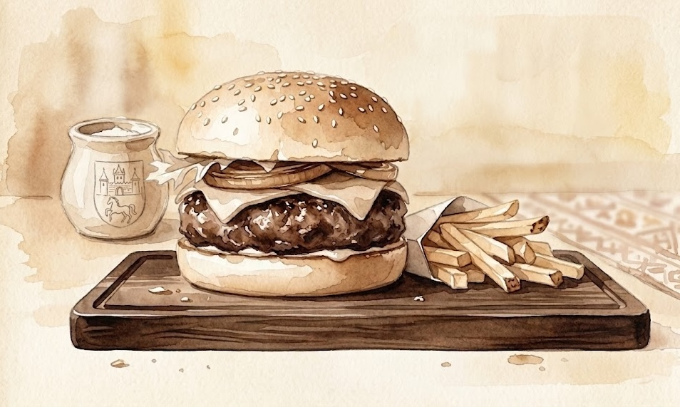
St. Patrick Irish Pub
Kousek Irska v Pardubicích. Skvělé burgery, grilovaná žebra a samozřejmě čepovaný Guinness. Ideální místo pro uvolněný večer.
Co musíte vidět
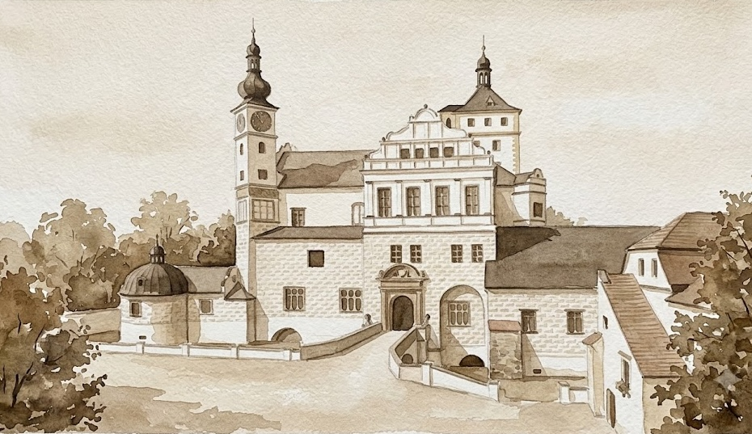
Zámek Pardubice
Renesanční zámek s unikátními hradbami a pávy volně se procházejícími po nádvoří. Uvnitř najdete Východočeské muzeum.
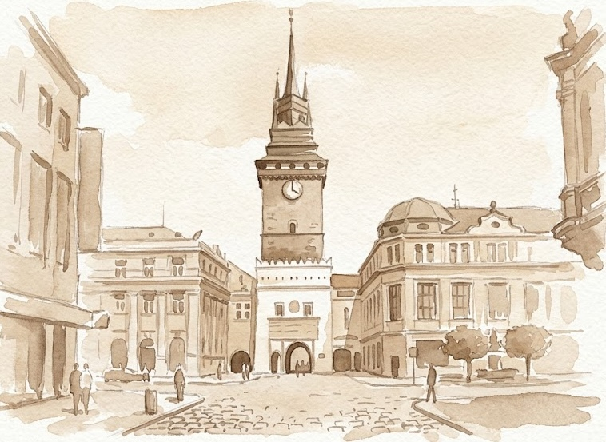
Zelená brána
Dominanta města. Vystoupejte na věž a užijte si výhled na celé historické centrum a Pernštýnské náměstí.
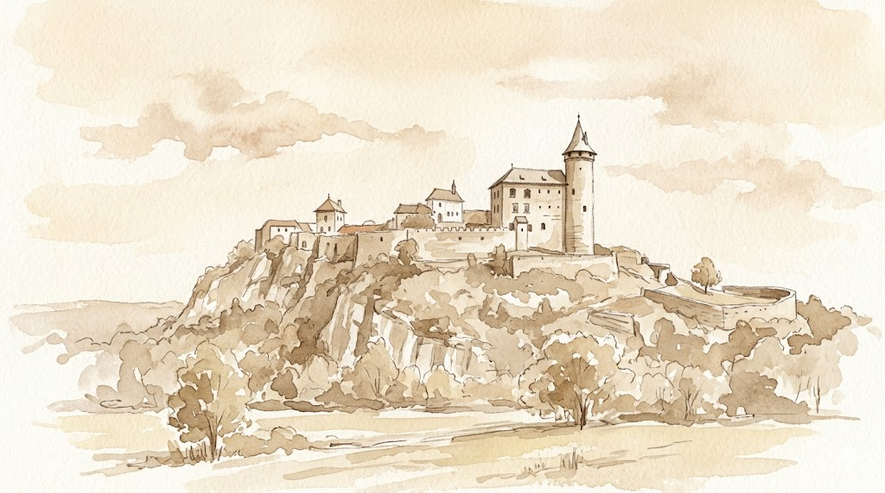
Hrad Kunětická hora
Kultovní hrad na kopci nedaleko města, známý ze seriálu Arabela. Skvělý tip na odpolední výlet.
To nejlepší z kalendáře
Pardubice žijí celý rok. Vybrali jsme pro vás akce, které stojí za to zažít.
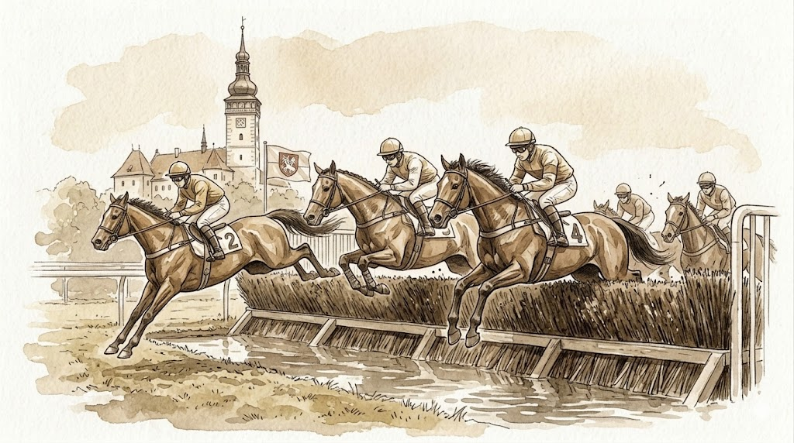
Velká pardubická
Nejstarší a nejtěžší dostih v kontinentální Evropě. Společenský vrchol sezóny.
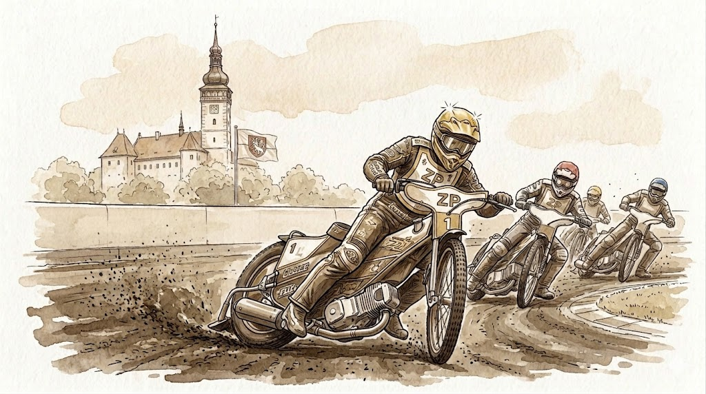
Zlatá přilba
Nejstarší plochodrážní závod na světě. Adrenalin, vůně metylu a bouřlivá atmosféra.
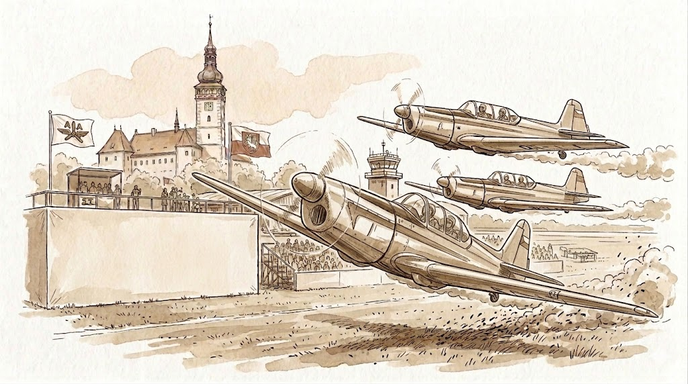
Aviatická pouť
Unikátní letecká show na pardubickém letišti. Historická letadla i moderní stíhačky.
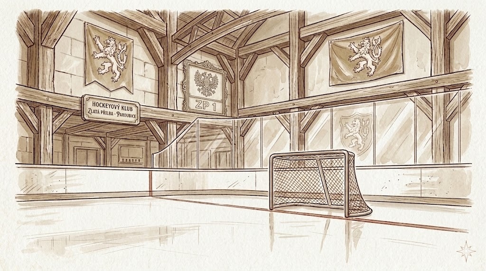
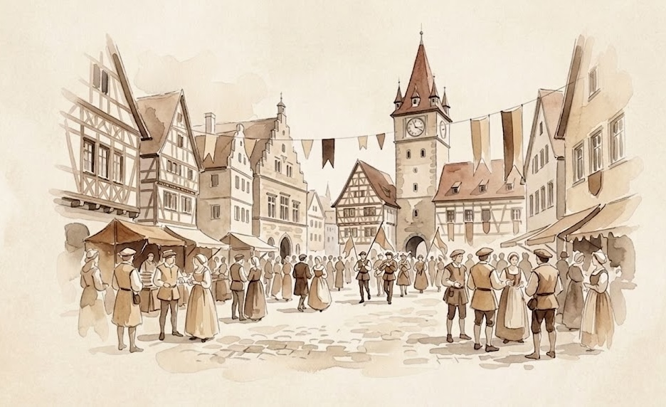
Pernštýnská noc
Městské slavnosti plné hudby, trhů, řemesel a ohňostrojů v historickém centru.
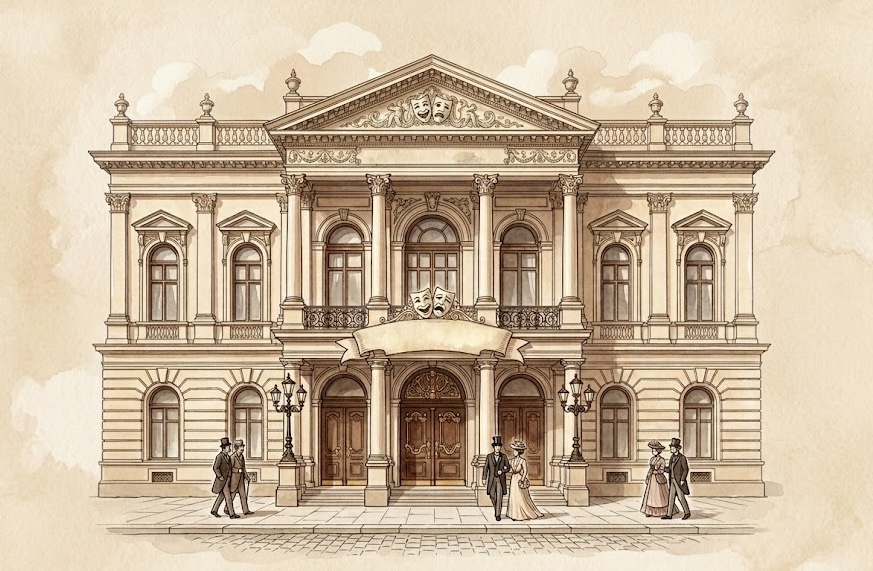